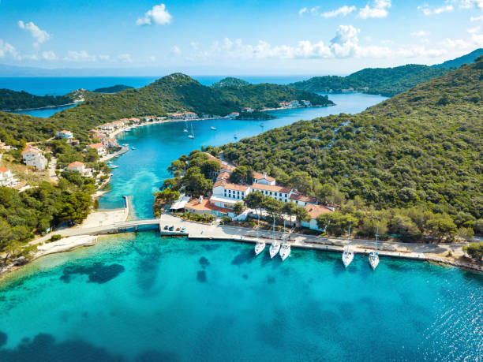
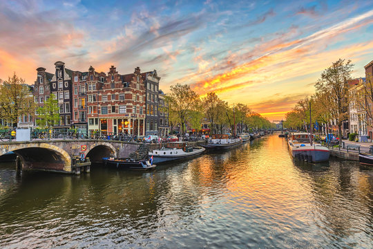

Zovem se Manuela Ivelja, imam 19 godina. Dolazim sa otoka Lastova. Studiram na Grafičkom fakultetu u Zagrebu.
Imam smeđu kosu i smeđe oči, visoka sam 166 cm. Volim svirati gitaru. Najdraže godišnje doba mi je ljeto.
Volim putovati i najdraža zemlja koju sam posjetila je Nizozemska.
Slike
Na prvoj slici je otok Lastovo, na drugoj Amsterdam u Nizozemskoj a na trećoj moj najdraži instrument gitara.
 